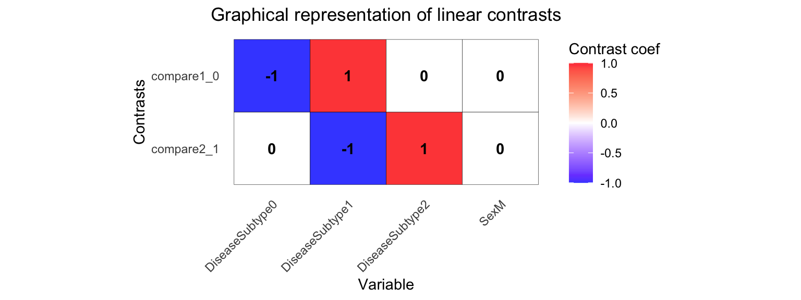

dream: Differential expression testing with linear mixed models for repeated measures
Gabriel Hoffman
Icahn School of Medicine at Mount Sinai, New York
Source:
vignettes/dream.Rmd
dream.RmdAbstract
Differential expression for repeated measures (dream) uses a linear model model to increase power and decrease false positives for RNA-seq datasets with multiple measurements per individual. The analysis fits seamlessly into the widely used workflow of limma/voom (Law et al. 2014).
Dream uses a linear model model to increase power and decrease false positives for RNA-seq datasets with repeated measurements. Dream achieves this by combining multiple statistical concepts into a single statistical model. The model includes:
- flexible modeling of repeated measures gene expression data
- precision weights to model measurement error in RNA-seq counts
- ability to model multiple random effects
- random effects estimated separately for each gene
- hypothesis testing for fixed effects in linear mixed models
- small sample size hypothesis test
Dream also includes multi-threaded analysis across thousands of genes on a multi-core machine.
variancePartition v1.25.4
November 19, 2021 13:43:24
Standard RNA-seq processing
This tutorial assumes that the reader is familiar with the limma/voom workflow for RNA-seq. Process raw count data using limma/voom.
library('variancePartition')
library('edgeR')
library('BiocParallel')
data(varPartDEdata)
# filter genes by number of counts
isexpr = rowSums(cpm(countMatrix)>0.1) >= 5
# Standard usage of limma/voom
geneExpr = DGEList( countMatrix[isexpr,] )
geneExpr = calcNormFactors( geneExpr )
# make this vignette faster by analyzing a subset of genes
geneExpr = geneExpr[1:1000,]Limma Analysis
Limma has a built-in approach for analyzing repeated measures data using duplicateCorrelation(). The model can handle a single random effect, and forces the magnitude of the random effect to be the same across all genes.
# apply duplicateCorrelation is two rounds
design = model.matrix( ~ Disease, metadata)
vobj_tmp = voom( geneExpr, design, plot=FALSE)
dupcor <- duplicateCorrelation(vobj_tmp,design,block=metadata$Individual)
# run voom considering the duplicateCorrelation results
# in order to compute more accurate precision weights
# Otherwise, use the results from the first voom run
vobj = voom( geneExpr, design, plot=FALSE, block=metadata$Individual, correlation=dupcor$consensus)
# Estimate linear mixed model with a single variance component
# Fit the model for each gene,
dupcor <- duplicateCorrelation(vobj, design, block=metadata$Individual)
# But this step uses only the genome-wide average for the random effect
fitDupCor <- lmFit(vobj, design, block=metadata$Individual, correlation=dupcor$consensus)
# Fit Empirical Bayes for moderated t-statistics
fitDupCor <- eBayes( fitDupCor )Dream Analysis
The dream method replaces two core functions of limma with a linear mixed model.
-
voomWithDreamWeights()replacesvoom()to estimate precision weights -
dream()replaceslmFit()to estimate regression coefficients.
Otherwise dream uses the same workflow as limma with topTable(), since any statistical differences are handled behind the scenes.
# Specify parallel processing parameters
# this is used implicitly by dream() to run in parallel
param = SnowParam(4, "SOCK", progressbar=TRUE)
# The variable to be tested must be a fixed effect
form <- ~ Disease + (1|Individual)
# estimate weights using linear mixed model of dream
vobjDream = voomWithDreamWeights( geneExpr, form, metadata, BPPARAM=param )
# Fit the dream model on each gene
# By default, uses the Satterthwaite approximation for the hypothesis test
fitmm = dream( vobjDream, form, metadata )
fitmm = eBayes(fitmm)
# Examine design matrix
head(fitmm$design, 3)## (Intercept) Disease1
## sample_01 1 0
## sample_02 1 0
## sample_03 1 0
# Get results of hypothesis test on coefficients of interest
topTable( fitmm, coef='Disease1', number=3 )## logFC AveExpr t P.Value adj.P.Val B
## ENST00000283033.5 gene=TXNDC11 1.556233 3.567624 31.02068 3.099042e-21 3.099042e-18 38.15636
## ENST00000257181.9 gene=PRPF38A 1.380549 4.398270 21.59222 1.683871e-17 8.419354e-15 29.93271
## ENST00000525790.1 gene=TDRKH 1.508341 3.184931 19.51845 1.767605e-16 5.892017e-14 27.78202
## z.std
## ENST00000283033.5 gene=TXNDC11 9.459336
## ENST00000257181.9 gene=PRPF38A 8.513757
## ENST00000525790.1 gene=TDRKH 8.236879Since dream uses an estimated degrees of freedom value for each hypothsis test, the degrees of freedom is different for each gene here. Therefore, the t-statistics are not directly comparable since they have different degrees of freedom. In order to be able to compare test statistics, we report z.std which is the p-value transformed into a signed z-score. This can be used for downstream analysis.
Note that if a random effect is not specified, dream() automatically uses lmFit(), but the user must run eBayes() afterward.
Advanced hypothesis testing
Using contrasts to compare coefficients
You can also perform a hypothesis test of the difference between two or more coefficients by using a contrast matrix. The contrasts are evaluated at the time of the model fit and the results can be extracted with topTable(). This behaves like makeContrasts() and contrasts.fit() in limma.
Multiple contrasts can be evaluated at the same time, in order to save computation time. Make sure to inspect your contrast matrix to confirm it is testing what you intend.
form <- ~ 0 + DiseaseSubtype + Sex + (1|Individual)
L = makeContrastsDream( form, metadata,
contrasts = c("DiseaseSubtype2 - DiseaseSubtype1",
"DiseaseSubtype1 - DiseaseSubtype0"))
# Visualize contrast matrix
plotContrasts(L) 
# fit dream model with contrasts
fit = dream( vobjDream, form, metadata, L)
fit = eBayes(fit)
# get names of available coefficients and contrasts for testing
colnames(fit)## [1] "DiseaseSubtype2 - DiseaseSubtype1" "DiseaseSubtype1 - DiseaseSubtype0"
## [3] "DiseaseSubtype0" "DiseaseSubtype1"
## [5] "DiseaseSubtype2" "SexM"
# extract results from first contrast
topTable( fit, coef="DiseaseSubtype2 - DiseaseSubtype1", number=3 )## logFC AveExpr t P.Value adj.P.Val B
## ENST00000355624.3 gene=RAB11FIP2 -0.9493146 5.260280 -5.114589 3.698015e-05 0.03698015 0.1470282
## ENST00000593466.1 gene=DDA1 -1.7265709 3.901579 -3.700902 1.205688e-03 0.60284415 -1.2751588
## ENST00000200676.3 gene=CETP 1.4777422 3.723438 3.910146 3.397163e-03 0.99951347 -1.4383266
## z.std
## ENST00000355624.3 gene=RAB11FIP2 -4.125580
## ENST00000593466.1 gene=DDA1 -3.237531
## ENST00000200676.3 gene=CETP 2.929309Comparing multiple coefficients
So far contrasts have only involved the difference between two coefficients. But contrasts can also compare any linear combination of coefficients. Here, consider comparing DiseaseSubtype0 to the mean of DiseaseSubtype1 and DiseaseSubtype2. Note you can also customize the name of the contrast.
L2 = makeContrastsDream( form, metadata, contrasts =
c(Test1 = "DiseaseSubtype0 - (DiseaseSubtype1 + DiseaseSubtype2)/2"))
plotContrasts(L2)
# fit dream model to evaluate contrasts
fit = dream( vobjDream[1:10,], form, metadata, L=L2)
fit = eBayes(fit)
topTable(fit, coef="Test1", number=3)## logFC AveExpr t P.Value adj.P.Val B
## ENST00000456159.1 gene=MET -0.9830788 2.458926 -6.975124 3.529901e-08 3.529901e-07 8.662257
## ENST00000570099.1 gene=YPEL3 -0.9512918 2.063331 -6.648837 6.060469e-07 2.172997e-06 7.230067
## ENST00000418210.2 gene=TMEM64 -1.0343236 4.715367 -6.655755 6.518991e-07 2.172997e-06 7.694536
## z.std
## ENST00000456159.1 gene=MET -5.512889
## ENST00000570099.1 gene=YPEL3 -4.989280
## ENST00000418210.2 gene=TMEM64 -4.975171Joint hypothesis test of multiple coefficients
Joint hypothesis testing of multiple coefficients at the same time can be performed by using an F-test. Just like in limma, the results can be extracted using topTable()
# extract results from first contrast
topTable( fit, coef=c("DiseaseSubtype2", "DiseaseSubtype1"), number=3 )## DiseaseSubtype2 DiseaseSubtype1 AveExpr F P.Value
## ENST00000418210.2 gene=TMEM64 5.301001 5.211674 4.715367 744.4317 5.216149e-23
## ENST00000555834.1 gene=RPS6KL1 5.662699 5.719196 5.272063 657.9520 2.377852e-22
## ENST00000589123.1 gene=NFIC 6.545195 6.181023 5.855335 519.2464 4.314166e-21
## adj.P.Val F.std
## ENST00000418210.2 gene=TMEM64 5.216149e-22 51.30770
## ENST00000555834.1 gene=RPS6KL1 1.188926e-21 49.79067
## ENST00000589123.1 gene=NFIC 1.438055e-20 46.89238Since dream uses an estimated degrees of freedom value for each hypothsis test, the degrees of freedom is different for each gene here. Therefore, the F-statistics are not directly comparable since they have different degrees of freedom. In order to be able to compare test statistics, we report F.std which is the p-value transformed into an F-statistic with \(df_1\) the number of coefficients tested and \(df_2=\infty\). This can be used for downstream analysis.
Small-sample method
For small datasets, the Kenward-Roger method can be more powerful. But it is substantially more computationally intensive.
fitmmKR = dream( vobjDream, form, metadata, ddf="Kenward-Roger")
fitmmKR = eBayes(fitmmKR)variancePartition plot
Dream and variancePartition share the same underlying linear mixed model framework. A variancePartition analysis can indicate important variables that should be included as fixed or random effects in the dream analysis.
# Note: this could be run with either vobj from voom()
# or vobjDream from voomWithDreamWeights()
# The resuylts are similar
form = ~ (1|Individual) + (1|Disease)
vp = fitExtractVarPartModel( vobj, form, metadata)
plotVarPart( sortCols(vp))
Compare p-values from dream and duplicateCorrelation
In order to understand the empircal difference between dream and duplication correlation, we can plot the \(-\log_{10}\) p-values from both methods.
# Compare p-values and make plot
p1 = topTable(fitDupCor, coef="Disease1", number=Inf, sort.by="none")$P.Value
p2 = topTable(fitmm, number=Inf, sort.by="none")$P.Value
plotCompareP( p1, p2, vp$Individual, dupcor$consensus)
The duplicateCorrelation method estimates a single variance term genome-wide even though the donor contribution of a particular gene can vary substantially from the genome-wide trend. Using a single value genome-wide for the within-donor variance can reduce power and increase the false positive rate in a particular, reproducible way. Let \(\tau^2_g\) be the value of the donor component for gene \(g\) and \(\bar{\tau}^2\) be the genome-wide mean. For genes where \(\tau^2_g>\bar{\tau}^2\), using \(\bar{\tau}^2\) under-corrects for the donor component so that it increases the false positive rate compared to using \(\tau^2_g\). Conversely, for genes where \(\tau^2_g<\bar{\tau}^2\), using \(\bar{\tau}^2\) over-corrects for the donor component so that it decreases power. Increasing sample size does not overcome this issue. The dream method overcomes this issue by using a \(\tau^2_g\).
Here, the \(-\log_{10}\) p-values from both methods are plotted and colored by the donor contribution estiamted by variancePartition. The green value indicates \(\bar{\tau}^2\), while red and blue indicate higher and lower values, respectively. When only one variance component is used and the contrast matrix is simple, the effect of using dream versus duplicateCorrelation is determined by the comparison of \(\tau^2_g\) to \(\bar{\tau}^2\):
dream can increase the \(-\log_{10}\) p-value for genes with a lower donor component (i.e. \(\tau^2_g<\bar{\tau}^2\)) and decrease \(-\log_{10}\) p-value for genes with a higher donor component (i.e. \(\tau^2_g>\bar{\tau}^2\))
Note that using more variance components or a more complicated contrast matrix can make the relationship more complicated.
Parallel processing
variancePartition functions including dream(), fitExtractVarPartModel() and fitVarPartModel() can take advange of multicore machines to speed up analysis. It uses the BiocParallel package to manage the parallelization.
- Specify parameters with the BPPARAM argument.
# Request 4 cores, and enable the progress bar
# This is the ideal for Linux, OS X and Windows
param = SnowParam(4, "SOCK", progressbar=TRUE)
fitmm = dream( vobjDream, form, metadata, BPPARAM=param)By default BPPARAM = SerialParam().
Session info
## R version 4.1.1 (2021-08-10)
## Platform: x86_64-apple-darwin19.6.0 (64-bit)
## Running under: macOS Catalina 10.15.7
##
## Matrix products: default
## BLAS: /System/Library/Frameworks/Accelerate.framework/Versions/A/Frameworks/vecLib.framework/Versions/A/libBLAS.dylib
## LAPACK: /System/Library/Frameworks/Accelerate.framework/Versions/A/Frameworks/vecLib.framework/Versions/A/libLAPACK.dylib
##
## locale:
## [1] en_US.UTF-8/en_US.UTF-8/en_US.UTF-8/C/en_US.UTF-8/en_US.UTF-8
##
## attached base packages:
## [1] stats graphics grDevices utils datasets methods base
##
## other attached packages:
## [1] edgeR_3.34.1 variancePartition_1.25.4 BiocParallel_1.26.2
## [4] limma_3.48.3 ggplot2_3.3.5 pander_0.6.4
## [7] knitr_1.36
##
## loaded via a namespace (and not attached):
## [1] nlme_3.1-153 bitops_1.0-7 fs_1.5.0 pbkrtest_0.5.1
## [5] doParallel_1.0.16 progress_1.2.2 rprojroot_2.0.2 numDeriv_2016.8-1.1
## [9] tools_4.1.1 backports_1.2.1 bslib_0.3.0 utf8_1.2.2
## [13] R6_2.5.1 KernSmooth_2.23-20 DBI_1.1.1 BiocGenerics_0.38.0
## [17] colorspace_2.0-2 withr_2.4.2 tidyselect_1.1.1 prettyunits_1.1.1
## [21] compiler_4.1.1 textshaping_0.3.5 Biobase_2.52.0 desc_1.4.0
## [25] labeling_0.4.2 sass_0.4.0 caTools_1.18.2 scales_1.1.1
## [29] pkgdown_1.6.1 systemfonts_1.0.2 stringr_1.4.0 digest_0.6.28
## [33] minqa_1.2.4 rmarkdown_2.11 aod_1.3.1 RhpcBLASctl_0.21-247
## [37] pkgconfig_2.0.3 htmltools_0.5.2 lme4_1.1-27.1 highr_0.9
## [41] fastmap_1.1.0 rlang_0.4.11 farver_2.1.0 jquerylib_0.1.4
## [45] generics_0.1.0 jsonlite_1.7.2 gtools_3.9.2 dplyr_1.0.7
## [49] magrittr_2.0.1 Matrix_1.3-4 Rcpp_1.0.7 munsell_0.5.0
## [53] fansi_0.5.0 lifecycle_1.0.1 stringi_1.7.5 yaml_2.2.1
## [57] MASS_7.3-54 gplots_3.1.1 plyr_1.8.6 grid_4.1.1
## [61] parallel_4.1.1 crayon_1.4.1 lattice_0.20-45 splines_4.1.1
## [65] hms_1.1.1 locfit_1.5-9.4 pillar_1.6.3 boot_1.3-28
## [69] reshape2_1.4.4 codetools_0.2-18 glue_1.4.2 evaluate_0.14
## [73] vctrs_0.3.8 nloptr_1.2.2.2 Rdpack_2.1.2 foreach_1.5.1
## [77] gtable_0.3.0 purrr_0.3.4 tidyr_1.1.4 assertthat_0.2.1
## [81] cachem_1.0.6 xfun_0.26 rbibutils_2.2.3 broom_0.7.9
## [85] ragg_1.1.3 snow_0.4-3 tibble_3.1.5 lmerTest_3.1-3
## [89] iterators_1.0.13 memoise_2.0.0 statmod_1.4.36 ellipsis_0.3.2